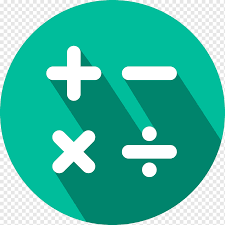

Maths| Module I: Partial Differential Equations | Origin of Partial Differential Equations, Linear and Non Linear Partial Equations of first order, Lagrange’s Equations, Charpit’s method, Cauchy’s method of Characteristics, Solution of Linear Partial Differential Equation of Higher order with constant coefficients, Equations reducible to linear partial differential equations with constant coefficients. |
|---|---|
| Module II: Applications of Partial Differential Equations | Classification of linear partial differential equation of second order, Method of separation of variables, Solution of wave and heat conduction equation up to two dimension, Laplace equation in two dimensions, Equations of Transmission lines. |
| Module III: Statistical Techniques I | Introduction: Measures of central tendency, Moments, Moment generating function (MGF) , Skewness, Kurtosis, Curve Fitting , Method of least squares, Fitting of straight lines, Fitting of second degree parabola, Exponential curves ,Correlation and Rank correlation, Regression Analysis: Regression lines of y on x and x on y, regression coefficients, properties of regressions coefficients and non linear regression. |
| Module IV: Statistical Techniques II | Probability and Distribution: Introduction, Addition and multiplication law of probability, Conditional probability, Baye’s theorem, Random variables (Discrete and Continuous Random variable) Probability mass function and Probability density function, Expectation and variance, Discrete and Continuous Probability distribution: Binomial, Poission and Normal distributions. |
| Module V: Statistical Techniques III | Sampling, Testing of Hypothesis and Statistical Quality Control: Introduction , Sampling Theory (Small and Large) , Hypothesis, Null hypothesis, Alternative hypothesis, Testing a Hypothesis, Level of significance, Confidence limits, Test of significance of difference of means, T-test, F-test and Chi-square test, One way Analysis of Variance (ANOVA).Statistical Quality Control (SQC) , Control Charts , Control Charts for variables ( X and R Charts), Control Charts for Variables ( p, np and C charts). |